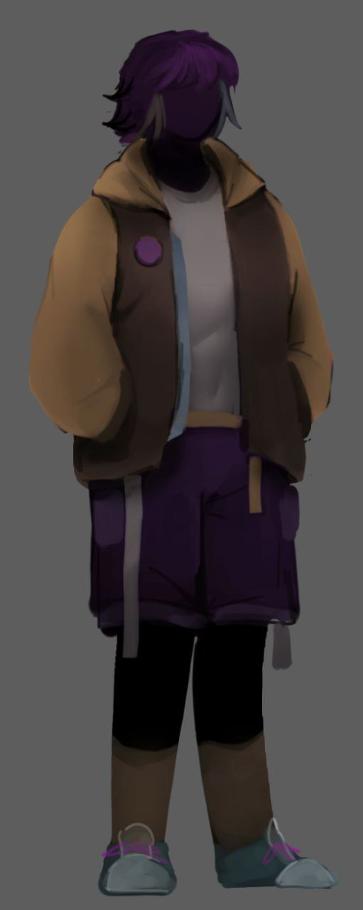
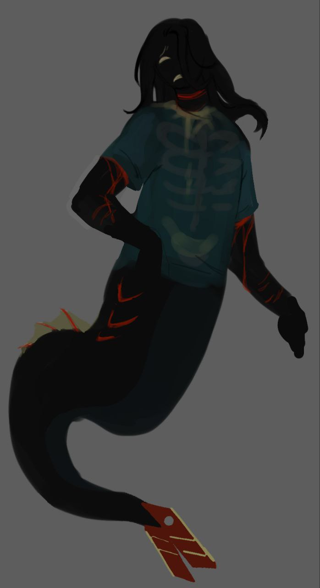
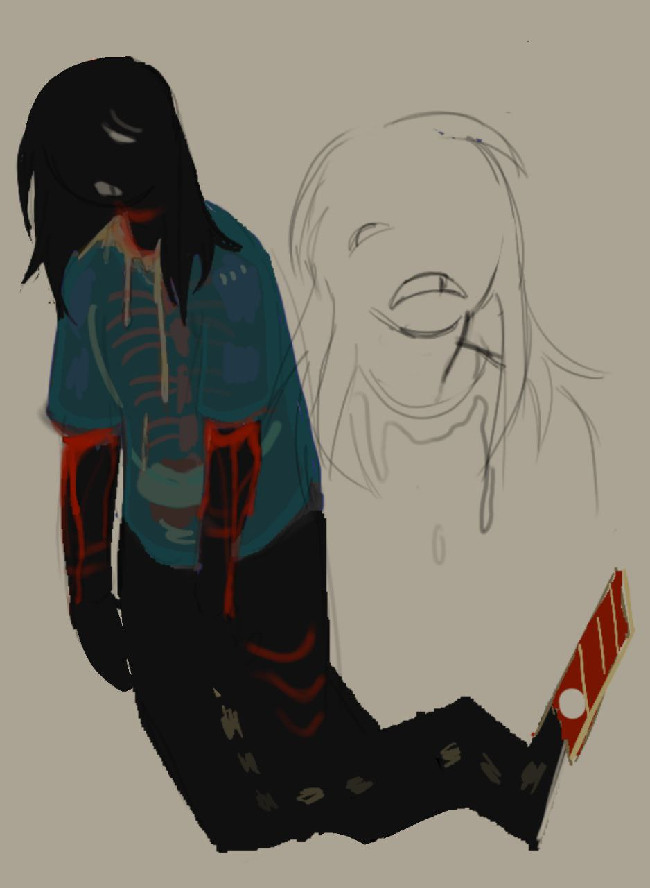

:/ДЕЛО 9
->
:/ДЕЛО 9
->
|
/
Основная информация:
разделяет номер копии 9 со своим братом, из-за особенности работы системы, законы по которым копии не могут видеться, на них почему то, не распространяются. называет себя рекордсменкой в различных гонках. считает, что довольно известна
копия активно идет на контакт, нередко интересуясь ирисверсом и выдвигая свои теории, что достаточно близки к правде(?)
она первая из пары самостоятельно начала догадываться о нереальности окружающего мира, и о существовании других копий по отрывкам ложных воспоминаний и это было действительно странно, что ̶б̶ы̶л̶а̶ ̶к̶а̶к̶ ̶г̶л̶а̶в̶н̶ы̶й̶ ̶г̶е̶р̶о̶й̶ ̶с̶и̶т̶к̶о̶м̶а̶ вокруг нее все складывалось СЛИШКОМ хорошо. в результате чего она начала загоняться в своем сознании, с мыслями был ли смысл в этом, если как таковой приз или результат стараний был предназначен ей с самого начала.
История:
так как данная копия разделяет свой сигнал с братом, изначально ее не заметили, из за того как близко она находится к другому сигналу. ее заметили совершенно случайно, при нахождении другой копии, один из работников космоса в спешке получив несколько новых уведомлений о новом сигнале, начал нервно искать ее, как обнаружил ее случайно просто приблизив экран. позже туда был отправлен 4 для получения информации о так называемой сестре 9 про которую он никогда почему то ранее не говорил (вероятно потому что она была добавлена недавно, но в его память она вписалась легко)
Факты
-любительница красить волосы себе и другим, предположительно нередко ее экспериментальным манекеном был брат
-не видит смысла в ремнях безопасности, когда она за рулем, так как в вождении она мастер
- у нее есть розовый какаду дома
:/ галерея

|
:/ДЕЛО 9
|
/
основная информация:
является призраком, что не должно было случится. так как система не предусматривает подобного, формально копия все еще находится в архиве, но хранение информации на него не имеет смысла, поэтому она была удалена.
:/ галерея 